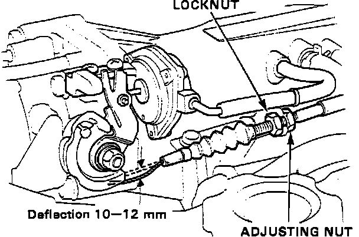

Throttle Cable/Linkage: Description and Operation
Throttle Cable:

The Throttle Cable, which runs from the accelerator pedal to the throttle body, is a sheathed, steel strand cable. When the driver applies pressure to the accelerator pedal and the pedal moves, the Throttle Cable moves in relation to the pedal. The cable then moves the throttle valve inside of the throttle body, allowing a greater amount of air into the engine.